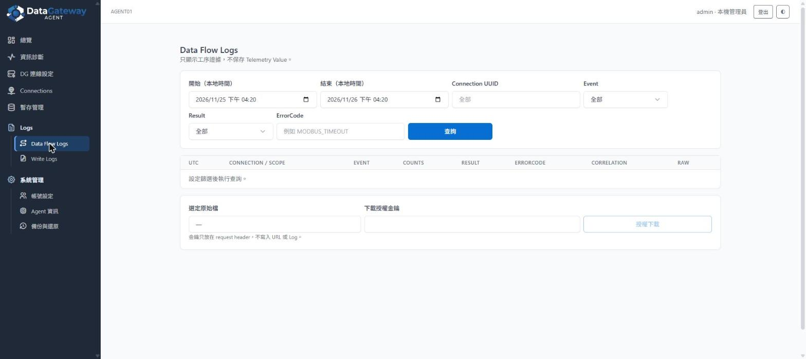
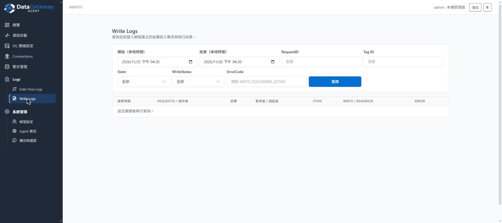

Data Flow Logs 與 Write Logs
Agent 端的工序紀錄：資料流事件記錄讀取與上傳過程，Write Logs 記錄設備寫入需求與結果。
查詢 Agent 資料流事件

- 設定開始、結束時間（本地時間）。
- 需要時輸入 Connection UUID，選 Event（R、E、G）、Result（OK、PARTIAL、ERR）或輸入 ErrorCode（例如 MODBUS_TIMEOUT）。
- 按「查詢」。
- 需要原始檔時，在下方「選定原始檔」選擇檔案，輸入下載授權金鑰後按「授權下載」。
表格列出時間（UTC）、連線、事件、筆數、結果與錯誤代碼。
失敗時先查
- 持續出現 E 與相同錯誤代碼：依代碼檢查設備連線（例如逾時代表設備沒有回應）。
查詢設備寫入紀錄

- 設定時間範圍，需要時輸入 RequestID、Tag ID，選 State（Accepted、Executing、Completed、Rejected、OutcomeUnknown）或 WriteStatus。
- 按「查詢」。
- 看要求值／讀回值、State、Write／Readback 與 Error。
可確認每筆寫入是否成功、讀回是否相符。
從 DG 或 VisoLink 送出的回寫，請在 DG「回寫需求與結果 › 需求紀錄」查詢完整結果。
失敗時先查
- State 為 OutcomeUnknown：寫入期間連線中斷，請以設備實際值為準並重新確認。